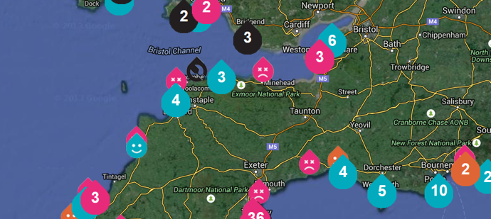

Many different groups have benefited from open data released by the Environment Agency (EA) – from businesses using it to create products and services to communities using it to understand more about flood risks.
Expert, agile businesses were engaged to help release and host the data
In order to respond quickly to a bout of severe flooding, EA worked with Shoothill to release the Risk of Flooding from Rivers and Sea (RoFRS) dataset in 2014. Bringing in a smaller, more agile business enabled EA to work flexibly and respond quickly to external demands – Shoothill also provided the APIs for a number of EA open datasets.
As Rod Plummer, CEO of Shoothill describes:
Prior to [the Flood Hack], EA had licensed the data to companies on a commercial basis [...] Fortunately for EA, Shoothill had already built an API for live flood data during the development of our FloodAlerts product, and so we were in place to deliver the API within the tight timescales required.
The Environment Agency has also worked with Epimorphics, a specialist linked-data solutions consultancy, since 2011, when it decided to release its bathing water quality data as open data. The Epimorphics team has worked with EA to continuously improve that data and now hosts other EA datasets, such as real-time river level monitoring and flood alert open data.
Surfers Against Sewage use EA bathing water quality open data to power their own app
Releasing open data effectively does not just involve a change of licensing.
You need rich access. As well as the raw data, you need applications that mean that [regular users] can go in and use the data, as well as the developers. EA is trying to create a whole ecosystem around its open data, which gives opportunities to people like us to develop those applications and provide the infrastructure.
— Dave Reynolds, CTO, Epimorphics
Working with EA has provided a platform for businesses like Epimorphics and Shoothill to find and attract more customers with similar demands. As Dave Reynolds explains:
[Working with EA] has been a useful source of revenue. It's also given us a reputation for doing a good job of releasing data, which has helped us to find other customers who are doing the same thing.
The release of EA open data saves businesses money
As more EA data is made open, more money can be saved by those who previously had to pay to use it. A national coverage licence for corporate use of the RoFRS dataset costed around £20,000 prior to its release as open data. The £1m (approx.) in revenue generated each year by the data can now be reinvested by the businesses that are no longer charged for their use of it, to develop new products and services that add even more value.
I don't think [users of the data] ever wanted to pay for it anyway […] there were a lot of people thinking ‘we shouldn't have to pay for it’.
— Paul Wyse, Flood & Coastal Risk Management, EA
When data is made open, more people use it
Mike Rose, EA Open Data Manager and member of the Evidence Directorate team, worked extensively on the release of the RoFRS dataset and found that "what seems to have been proved is that by making it open, more people are using it."
Those concerned with flooding are using the RoFRS dataset to understand the risks in their areas. Deborah Yates, of the EA Data, Mapping, Modelling & Information team, described how she had seen one flood forum member use the data to quickly come up with a custom, local view. “He's mapped it with other data that they've got and they can start to see what's coming in from rivers upstream that could affect them, on a totally personal or local level,” she explained.
Opening data also means developers and small business who could not afford to pay for access can now also use it to enhance their work and build new tools. There are nearly 250,000 raw requests each month for river levels and flood alerts data, just one of the flood-related datasets hosted by Epimorphics.
Members of the EA team have found that even the nonprofit organisations that could access the data for free (before it was published as open data) now use the data more. Primarily, this is thought to be a result of the Open Government Licence, which has made the data easier to use than EA’s old non-commercial licensing terms did.
Local communities and councils can access the data more easily
Without licensing restrictions or administrative hoops to jump through, more community groups and councils can access and use data for local initiatives.
The day [the RoFRS data] came out, we worked with Get mapping [who produce] Parish Online for Parish and Town councils. Being able to access and use the whole dataset was really good for them – they were able to get the data first-hand without having to go through [the] long process of getting each Local Authority to supply their bit of RoFRS individually to Getmapping, or Getmapping having to pay for a full commercial licence. [The data] could get to community groups a lot more easily.
— Angharad Stone, Data, Mapping, Modelling & Information, EA
We now have more tools to help us to understand and deal with flooding
When faced with flooding, a number of applications, products and services developed using EA’s open data are now available to help us to understand and deal with it.